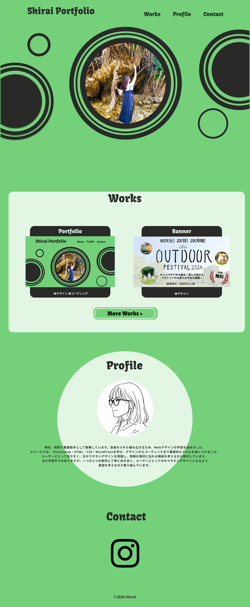

◉概要
ポートフォリオ
◉デザインコンセプト
自然や安心感をイメージし、メインカラーに緑を採用しました。
また、円を多用することで柔らかく親しみやすい印象になるよう
意識しました。
◉工夫した点
ユーザーが迷わず作品を閲覧できるよう、『Works→詳細』
の流れを意識したシンプルな構成にしました。
また、視線が中央のビジュアルに集まるよう配置を調整してい
ます。
◉使用ツール
Figma / VS Code
